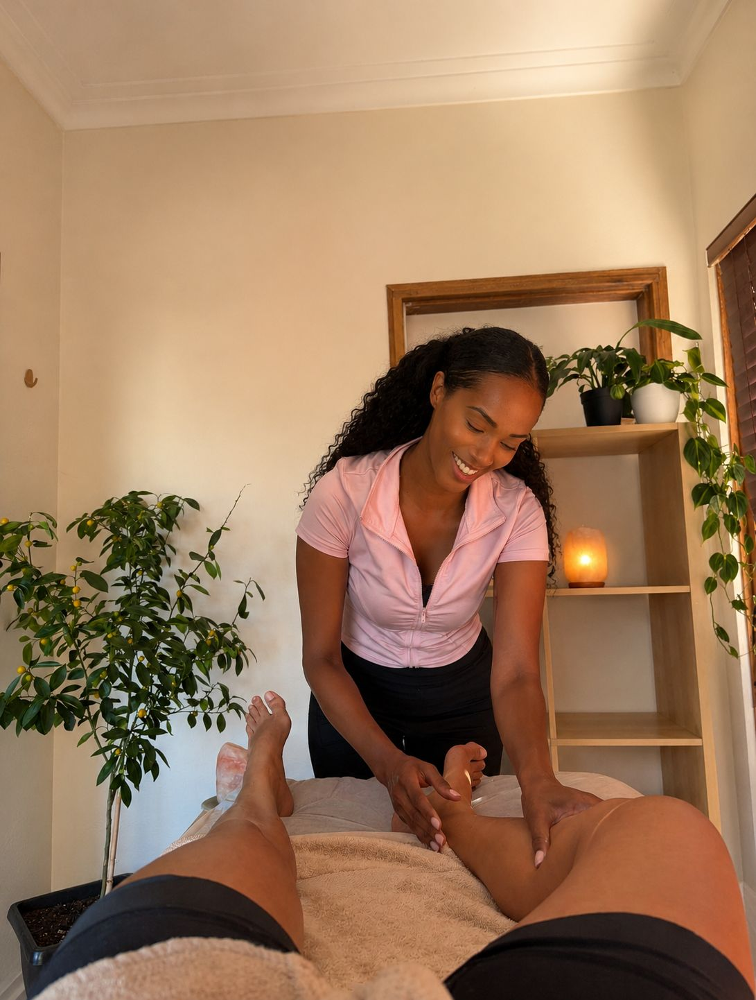

MARINA RIBEIRO · FASCIA RELEASE SPECIALIST · SYDNEY
Move. Release. Reconnect.
Somatic & myofascial massage, KSE Sensory Energetics®, conscious-movement training. Sydney. EN + PT.
THE METHOD
Most therapists work on muscle. Marina works on fascia.
Four modalities. One system.
Move · Release · Reconnect
Chronic tension, pain, nervous system overload, or a body that feels disconnected. Marina's massage and bodywork services address what you have been carrying.
See massage + bodyworkNot just sets and reps. Conscious Movement Personal Training at Snap Fitness Maroubra, designed for how your body actually moves.
See training plansFREE 10-SECOND DIAGNOSTIC
Pick what is bothering you the most. Marina will tell you which session is the right starting point, and which techniques you actually need.
THE DIFFERENCE
Most therapists are trained in one technique and apply it to every client. Marina holds specialist qualifications in five distinct methods and builds each session from scratch around what your body needs that day.
Every session is a custom blend. Never the same twice.
A FAIR WARNING
Marina takes a limited number of new clients each week and turns down work she is not the right person for. Some honest examples of when she is not your best option:
If none of that scared you off, you are probably in the right place.
INTEGRATIVE THERAPEUTIC MASSAGE · MON / WED / FRI · 1PM TO 6PM
"My clients usually book me after a physio, a remedial massage, and a chiropractor. The tension still comes back. We work the system, not the symptom."

60 minutes · chronic neck, back, hips, shoulders
Booked when standard remedial massage has not held. Sixty minutes addressing chronic neck and shoulder tension, lower-back compensation, hip-flexor lock, and the postural patterns making it all worse. Marina uses whichever of her five techniques your body responds to that day. You choose the regions. She builds the session around what she finds.
Somatic Release Massage is a methodology developed by Marina Ribeiro, built from the integration of different therapeutic techniques with a focus on deep relaxation, body release, and nervous-system regulation.
The technique combines Brazilian lymphatic drainage, myofascial release, breathwork, and deep-relaxation techniques into one complete experience of physical and mental well-being.
The bodywork helps reduce muscular tension, fluid retention, accumulated physical stress, and fascial rigidity, improving circulation, mobility, body awareness, and the sense of lightness you leave with.
Breathwork and deep-relaxation work regulate the central nervous system, lowering cortisol and improving well-being, relaxation, and body balance. More than a massage, Somatic Release Massage is an integrative experience that reconnects body and mind.
First-session guarantee · Cancel free up to 72 hours · Pay at booking
Membership by invitation after your first session.
Membership by invitation after your first session.
60 minutes · TMJ, jaw, tension headaches, sleep
For TMJ tension, tension headaches, jaw clenching, and the cumulative stress most people only notice once it is gone. Sixty minutes working through shoulders, neck, throat, jaw, and inside-mouth release using buccal and TMJ techniques most therapists in Sydney do not offer. Clients typically report deeper sleep that night and reduced jaw tension within 24 hours.
Book this sessionFirst-session guarantee · Cancel free up to 72 hours · Pay at booking
90 minutes · for clients carrying years, not weeks
If standard massage hasn't held, this is the session built for what's underneath it. Sensory Energetics combines trigger-point work, guided breath, and nervous-system release to clear tension your body has stored for months or years. The kind that comes back three days after a regular treatment. Clients leave looser, sleep deeper that night, and most book again within the fortnight.
Sensory Energetics® is an integrative methodology focused on the deep release of physical and emotional tension and the patterns the nervous system has accumulated. Inspired by ancient Eastern techniques and combined with breathwork, body stimuli, and somatic awareness, it reorganises body and mind by naturally activating the central nervous system.
During the session, the body may respond with involuntary tremors and natural neuromuscular reactions that help discharge stored tension, regulate stress, and reach deep relaxation. These responses lower cortisol and support the production of neurotransmitters tied to well-being, focus, motivation, and pleasure, including dopamine.
More than a body experience, Sensory Energetics® works on the connection between body, emotion, and mind, leaving clients with lightness, mental clarity, emotional balance, and stronger body awareness.
First-session guarantee · Cancel free up to 72 hours · Pay at booking
CONSCIOUS MOVEMENT PERSONAL TRAINING · SNAP FITNESS MAROUBRA
Each session is 60 minutes, built around an integrated methodology focused on performance, body awareness, mobility, strength, and quality of life. Over 15 years guiding thousands of women across Brazil, now in Sydney, Marina helps clients build strength, confidence, autonomy, and well-being through movement. She brings her qualifications in myofascial therapy, TMJ massage, buccal massage, and myo aponeurosis training into every session. You do not need a separate appointment to fix what is holding your training back.
All sessions take place at Snap Fitness Maroubra. Clients must hold an active Snap Fitness membership before their first session. Marina is an independent trainer. The gym carries no responsibility for PT services.
Tue + Thu 8am to 6pm | Mon + Wed + Fri 8am to 11am
All plans: minimum 2 months commitment · Cancel with 1 week written notice
BODYWORK THERAPY
Bodywork is a therapeutic approach that refines movement patterns and releases stored tension, promoting physical, mental, and emotional health. Marina works with the body as a complete system.
WHAT THE RESEARCH SAYS
Four numbers most people do not know. The muscle behind each one responds to the right approach.
The body responds. The right technique, in the right place, at the right depth. That is what Marina builds every session around.
See how it worksRESULTS
My self-esteem changed in just a few weeks. With Marina and this method, I started feeling more confident, beautiful, and secure in my own body. Today I look in the mirror with pride.
I saw a huge difference in just 2 weeks. With Marina's method, my body felt lighter, my energy increased, and my confidence completely changed. Today I feel happier, more beautiful, and alive.
I thought I would lose strength with age, but the opposite happened. With Marina, I regained vitality, mobility, and energy to enjoy life again. I feel stronger than I have in years.
ABOUT MARINA
Marina Ribeiro da Silva is a Physical Education professional with over 18 years dedicated to movement, health, and women’s well-being. Her path began through dance: at fifteen she was already teaching it, discovering early on how movement transforms lives, self-esteem, and the connection to one’s own body. When she came of age, she chose to study Physical Education to turn that passion into a profession.
In Brazil, Marina worked with the Minas Gerais government on Movimenta Contagem, recognised as the largest free outdoor physical-activity programme in the country. After the pandemic she founded Mulheres Ativas, a project built especially for women, particularly those over 40, mothers, and women who had never felt at home in traditional gyms. It grew into far more than a training space: a place of welcome, friendship, and emotional strengthening.
Today she works in Sydney, specialised in supporting women across every stage of life, including perimenopause. Her sessions cover physical conditioning, hypertrophy, mobility, posture, body awareness, and quality of life, always with a humanised, individual approach.
Alongside Physical Education, Marina has practised bodywork and massage for over 10 years. From that journey she developed her own fascial-release technique, combining body knowledge, breath, somatic awareness, and myofascial release to relieve physical and emotional tension and bring the body back into deep, balanced connection.
FAQ
Because they address the same system. Fascial tension limits movement. Movement restrictions reduce training results. Marina's specialist qualifications mean she addresses both in one session, without needing a separate appointment.
No. Some clients come with chronic pain. Others come because they want more energy, better posture, or stronger training results. Marina works with all of it.
Marina assesses how your body is moving and holding tension. She asks what brought you in, what you have tried before, and what you want to change. The session is shaped around that, not a fixed protocol.
Yes. All in-person sessions take place at Snap Fitness Maroubra and an active gym membership is required before your first session.
Yes. Marina works with clients from age 15. Clients under 18 require written parental or guardian consent before the first session. Contact Marina via WhatsApp to arrange this.
Yes. Many clients do both, and the results are usually faster. The bodywork removes restrictions that the training then builds on.
Because you are not getting a standard remedial massage. Each session draws from five specialist techniques most therapists never combine. Clients who used to book physio (~A$160), remedial massage (~A$130), and a movement assessment separately get the same work in one hour. If you need a single relaxation massage, Marina is not the right choice. If you need tension that actually shifts, she is.
Most clients notice looser movement and deeper sleep within 24 hours of the first session. Chronic tension that has been building for years usually shifts meaningfully across 3 to 5 sessions. After session one, Marina will tell you honestly how many sessions she expects your body needs, and what it does not need.
If your first session is not what you expected, message Marina on WhatsApp within 24 hours. She will make it right. Rework the next session, redirect you to a more appropriate specialist, or refund. No long forms. No back-and-forth.
Massage and bodywork sessions take place in Randwick. Personal training sessions are at Snap Fitness Maroubra. Both have free on-street parking within a 1–2 minute walk and are 15–20 minutes from Sydney CBD by car. Marina sends the exact address and parking notes in your booking confirmation.
Sessions are not claimable through standard private health rebates. Marina is a bodywork specialist and personal trainer, not a registered remedial massage therapist or physiotherapist. If insurance rebate is your priority, book with a registered remedial therapist instead. Honesty matters more than the booking.
Pregnancy, postpartum, recent surgery, acute injury, and specific medical conditions need a brief WhatsApp conversation first. Marina will tell you honestly what she can and cannot do for your situation, and refer you to the right specialist if bodywork is not appropriate. Message her before booking.
A $125 to $305 session is not a decision you should make from a homepage. Talk to Marina on WhatsApp before you book. She'll ask what you're dealing with, what you've already tried, and tell you honestly whether she's the right person, or who is.
15 minutes. Free. On WhatsApp.
Message Marina on WhatsAppMarina responds within 24 hours. No obligation to book.
BOOK A SESSION
All bookings are online. Pick your service, choose a time, pay securely. Confirmation email and SMS reminder included. No back-and-forth needed.
If your first session is not what you expected, message Marina on WhatsApp within 24 hours. She will make it right. No complicated process.